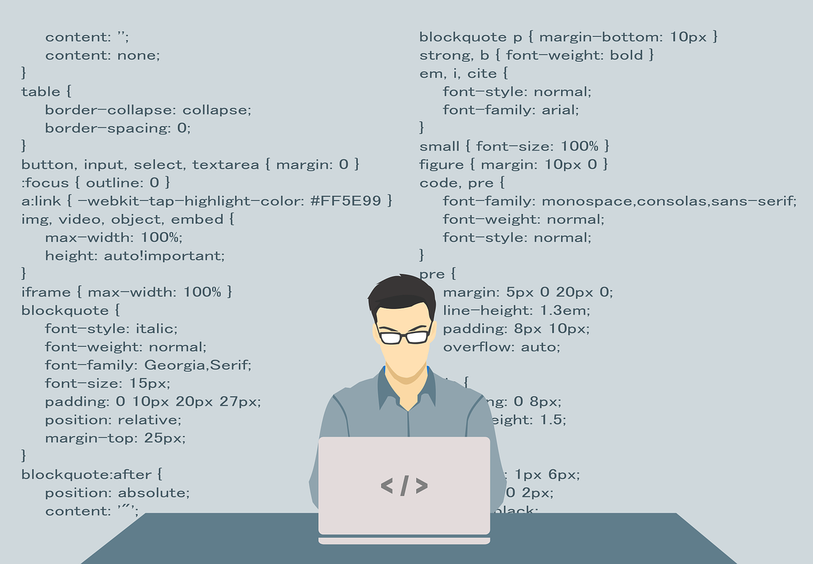
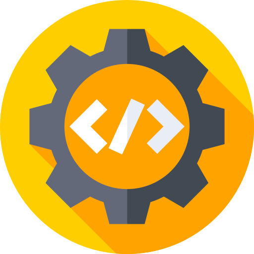
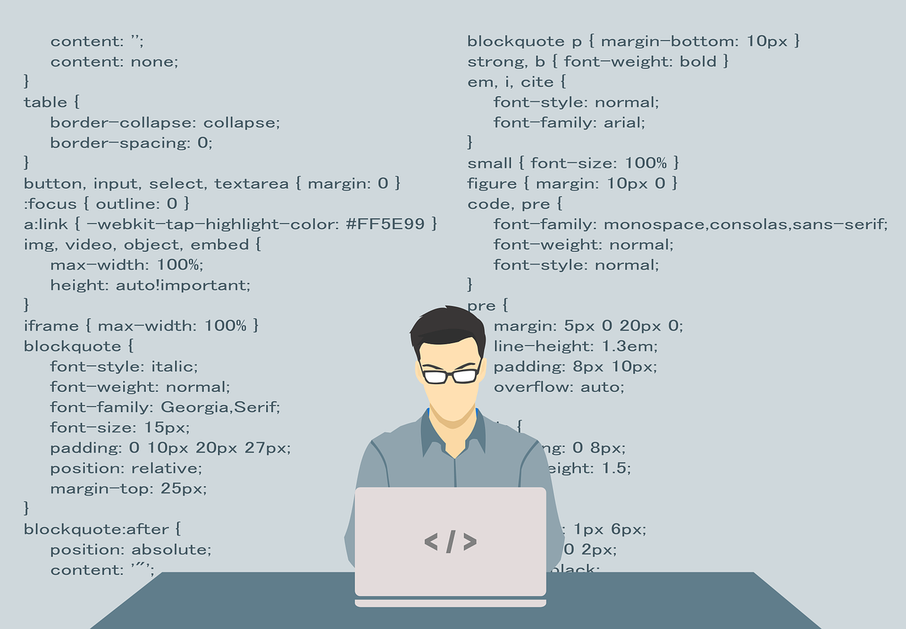
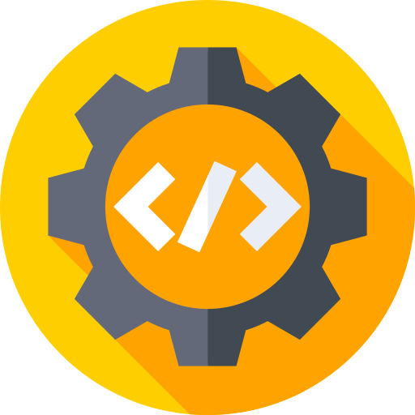
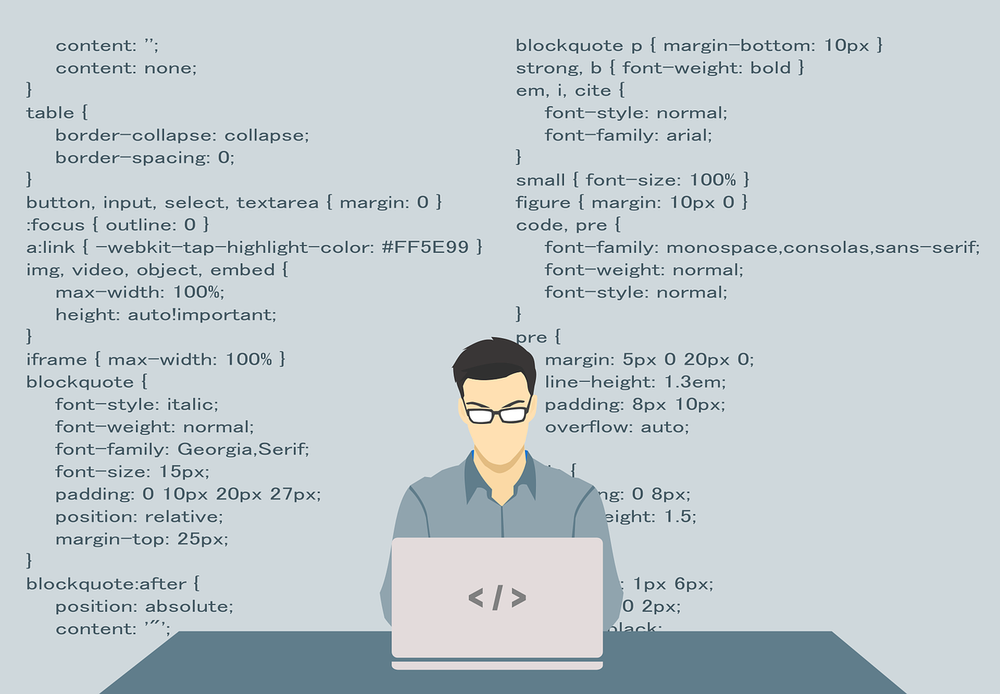
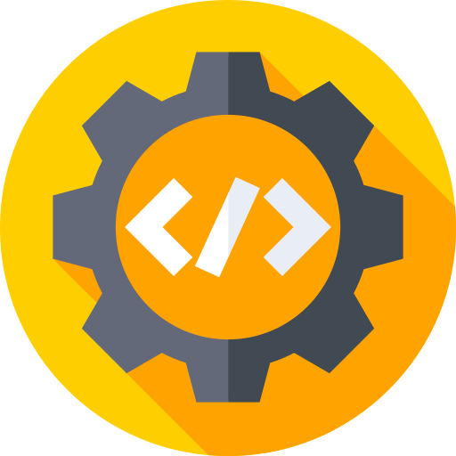

Un Framework es una estructura base que sirve como punto de partida para desarrollar proyectos con objetivos específicos. Es, en esencia, una plantilla predefinida que facilita la creación de aplicaciones o software, proporcionando un esquema conceptual que simplifica el trabajo. En lugar de construir todo desde cero, los desarrolladores pueden aprovechar esta estructura y complementarla según las necesidades del proyecto. Esto no solo acelera el proceso de desarrollo, sino que también permite entregar productos más eficientes y con menos errores, ya que muchos aspectos del Framework han sido probados y optimizados previamente.
¿Para qué se utiliza un Framework en Internet?
Para cualquier proyecto en Internet se requiere un desarrollador web que produzca el software o la aplicación que necesitamos. Dependiendo del tipo de proyecto, esta tarea puede durar mucho tiempo si se crea de la nada. Es necesario elaborar parte por parte, haciendo pruebas y aciertos hasta conseguir el objetivo.
Todo esto puede requerir uno o más programadores, además del tiempo suficiente para realizar las pruebas necesarias hasta que el software esté funcionando perfectamente. Sin embargo, los Frameworks permiten entregar un proyecto en menos tiempo y con un código más limpio, cuya eficacia ya ha sido comprobada.
A partir del Framework los programadores pueden complementar y/o modificar la estructura base para entregar el software o la aplicación que cumpla los objetivos requeridos.


Tipos de Frameworks
Node.js: Framework popular para aplicaciones de servidor
React.js: Framework de JavaScript para construir interfaces de usuario
jQuery: Librería de JavaScript para manipulación del DOM
Express: Framework minimalista para aplicaciones web en Node.js
Angular: Framework de JavaScript desarrollado por Google
Vue: Framework progresivo para construir interfaces de usuario
Django: Un framework versátil y eficiente para construir aplicaciones web escalables y dinámicas
Bootstrap: Un framework CSS utilizado en sitios de empresas como Twitter, Spotify y Udacity
¿Como elegir un buen Framework?
Elegir el framework adecuado para un proyecto de desarrollo web es una decisión crucial que puede afectar significativamente la productividad, el rendimiento y el éxito general del proyecto. Aquí hay algunos consejos para ayudarte a elegir el framework más adecuado:
Comprende los requisitos del proyecto:
Asegúrate de conocer las funcionalidades y escalabilidad necesarias para elegir un framework que se adapte a tus necesidades.
Evalúa la tecnología existente:
Considera cómo el framework se integra con tu infraestructura actual, teniendo en cuenta lenguajes y bases de datos.
Considera la curva de aprendizaje:
Elige un framework que el equipo pueda aprender rápidamente, pero balancea con las demandas del proyecto.
Analiza el rendimiento y la escalabilidad:
Verifica si el framework maneja bien el tráfico y la complejidad si tu aplicación crecerá a largo plazo.
Evaluación de características y flexibilidad:
Asegúrate de que el framework ofrezca las características específicas necesarias y que sea flexible para el tipo de aplicación que construirás.
Prueba el framework:
Realiza un prototipo o prueba de concepto para evaluar cómo se ajusta a las necesidades del proyecto.


 


